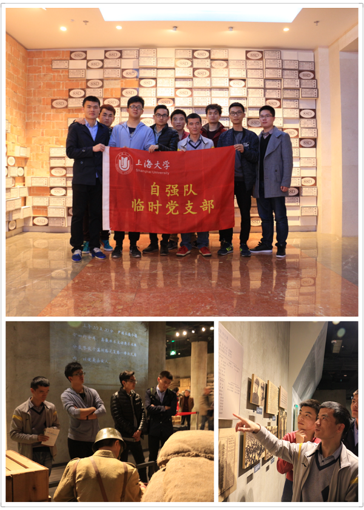

2016年3月30日，下午1时，由上海大学临时党支部组织的“回顾抗战——参观四行仓库”活动正式开始。自强队成员汪洋担任此次活动的负责人，包括自强队胡小毛、江旭辉、范彬彬、杜映峰、刘振、贺永祥、张志松七名同学参加了此次活动。
下午2时，自强队一行抵达光复路1号（四行仓库抗战纪念馆）。队员们带着崇敬的心情走进了纪念馆，仔细的参观每一个展览窗口，了解当时的历史。四行仓库是一座位于上海闸北区南部的仓库建筑。原是大陆银行和北四行（金城银行、中南银行、大陆银行及盐业银行）联合仓库，淞沪会战时期，这里曾驻扎452名国民党将士英勇抵抗日军的进攻。
自强队队员分别参观了四行仓库抗战纪念馆包括序厅、“血鏖淞沪”、“坚守四行”、“孤军抗争”、“不朽丰碑”及尾厅等六个部分。
就像钱伟长校长说的：“我们培养的学生首先应该是一个全面的人，是一个爱国者，一个辩证唯物主义者，一个有文化艺术修养、道德品质高尚、心灵美好的人；其次，才是一个拥有学科、专业知识的人，一个未来的工程师、专门家。”
自强队通过此次活动深深地意识到了对于一个国家而言落后就要挨打。作为炎黄子孙，我们必定要奋勇向前为中华民族的伟大复兴而奋斗！
上海大学自强队
2016.3.31